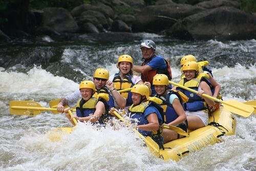

Dry Oar River Rafting Company

We run rivers
Bear River offers both calm, relaxing waters with stunning scenery to wild rapids for thrill seekers. Dry Oar provides everything you need to enjoy what the river has to offer. We have a tours for everyone.

We run rivers to relax
The Bear River offers some of the most stunning scenery in the West. Rafters of all ages can relax while enjoying fishing, swimmming, or sight-seeing.

We run whitewater for the rush
For those wanting a more exciting adventure, Wild Rock Canyon offers thrills with its class IV rapids.
Come run with us!
Whether you're looking for a relaxing afternoon or an exciting adventure, the Bear River and Dry Oar is your one-stop for fun! We offer rentals and tours ranging from three hours to one week. Call us or book online now!